OTUS · Архитектор искусственного интеллекта
Распутина Анастасия
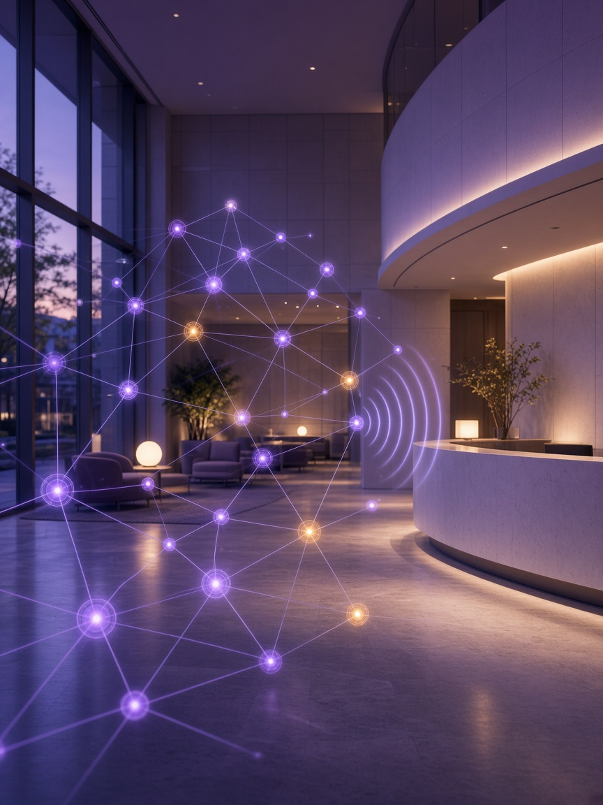
Автор работы
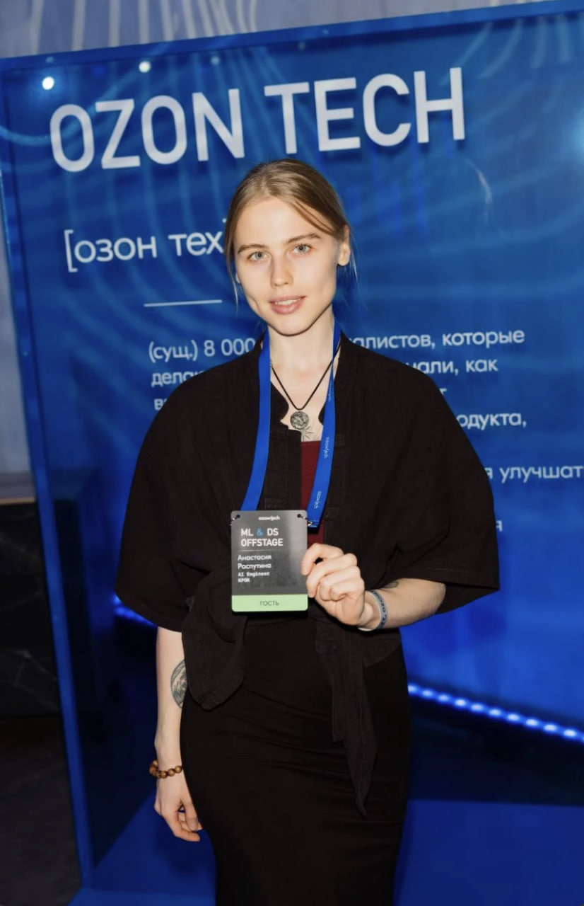
Ex-КРОК, 6 лет — старший backend-разработчик: микросервисы, интеграции, корпоративные боты.
Последние три года — сервисы с искусственным интеллектом: RAG по базам знаний и ИИ-агенты.
Платформа голосовых ИИ-агентов.
План
Цель и задачи
Цель: спроектировать и довести до работающего стенда on-premise голосового ИИ-ассистента медицинского центра с GraphRAG — так, чтобы врачебная тайна и требования 152-ФЗ обеспечивались архитектурой, а не оговорками в инструкции модели.
Задача
Справочная линия двух филиалов — 500 обращений в день, в пиковый час до ста.
⏳Сегодня
✨С ассистентом
Справочное обращение занимает у оператора около четырёх минут. В пиковый час очередь растёт быстрее, чем регистратура успевает её разбирать.
Подготовка, филиал и свободное окно закрываются в том же обращении. Цель — до 40% обращений без оператора; человеку остаются жалоба и исключение.
Цена услуги, адрес филиала, подготовка к исследованию, ближайшее окно — один и тот же справочник по кругу каждый рабочий день.
Ответ собирается из графа услуг и документов клиники, запись и перенос — только после подтверждения пациента. Нет опоры — отказ или оператор.
Линия работает десять часов в день, 250 дней в году. Кто не дозвонился, записывается там, где ответили: потеря происходит на входе.
Контур отвечает без перерывов. Ориентир устойчивого режима — около 1,5 ставки регистратуры, ≈ 2,2 млн ₽ в год чистой экономии ФОТ.
Облачный ассистент обошёлся бы в 4–8 ₽ за сессию, но речь и карточки пациентов нельзя передавать наружу: 152-ФЗ и 323-ФЗ ст. 13.
Всё остаётся в клинике: ≈ 30 ₽ за сессию. Закон закрывается размещением и проверкой прав, а эффект — A/B против живой линии при CSAT не ниже контроля.
Рамка контура
Голосовой ассистент типового медицинского центра: справка по услугам и подготовке, запись, перенос и отмена. Текст запроса, карты и синтез речи остаются внутри периметра.
Распознавание речи и генерация — внутри клиники. Внешние облачные сервисы речи и моделей не вызываются.
Голос и чат — одна программа разговора. Карту открывает тот, кто спросил, а не канал входа.
Услуги, врачи, филиалы, подготовка. Карточки — в CRM. МКБ-10 — терминология, не диагноз.
В календарь попадает только то, на что пациент сказал «да». Представитель записывает ребёнка по опеке.
Диагноз, клинические назначения, обучение моделей, промышленная CRM и телефония. Границы зафиксированы в реестре требований.
Телефония и CRM — за границей поставки. Система зависит от контракта порта, не от вендора.
Стек
Карта контура: где ведётся диалог, где хранятся знания и где выполняются вычисления. Конкретные решения и отклонённые варианты — на следующем слайде.
Пациент звонит или пишет на сайте. Оба канала входят через один шлюз и подчиняются одним правилам.
Определяет маршрут реплики, запрашивает подтверждение на запись и передаёт диалог оператору, когда опоры в знаниях нет.
Прайс и памятки — в графе и индексе. Карточки и визиты — в учётной системе. Секреты — в хранилище.
Одна карта обслуживает распознавание и синтез речи, вторая — генерацию ответа. Ускорители вынесены в отдельный сегмент сети.
Стек
Architecture Decision Record — запись архитектурного решения: контекст, рассмотренные варианты, выбор и последствия. Девять записей закрывают контур целиком: от размещения и модели доступа до движка генерации и речевого канала. На плашке — принятое решение и главный отклонённый вариант, полные записи с расчётами и ссылками — в docs/adr/.
Данные не покидают периметр клиники
Отклонено: облачный API, в том числе со схемой анонимизации
Сеть филиалов, общая карта; опека до 15 лет по ребру GUARDIAN_OF
Отклонено: отдельная база на пациента
База Qwen3-32B: русский язык и вызов инструментов
Отклонено: модели от 70B в этой поставке
Генерация и речь разведены по узлам
Отклонено: аренда GPU на горизонте трёх лет
Единственный движок генерации в контуре
Отклонено: SGLang, TGI, TensorRT-LLM
Эмбеддинги и переранжирование, контекст 8192 токена
Отклонено: e5 и FRIDA с контекстом 512
Онтология клиники и фрагменты документов с меткой доступа
Отклонено: файловый FAISS без фильтра доступа, рекурсия в PostgreSQL
Один маршрут на голос и чат; проверка прав — обязательный шаг
Отклонено: линейный скрипт, CrewAI и AutoGen
Распознавание, разметка говорящих и синтез в периметре
Отклонено: облачные Speech API
C4 · L1 Context
Слева — люди и телефония, справа — учётные системы. Персональные данные и текст запроса за периметр не выходят ни на одном плече.
C4 · L2 Container
Верхняя плоскость ведёт разговор: принимает звонок или чат, выбирает путь, проверяет права. Нижняя держит граф, индекс, карточки, секреты и модель. Вход в обе — через один шлюз.
Шлюз, маршрут, проверка ввода и прав, работа с записью. Здесь решается, что ответить и кому что можно.
Граф услуг, фрагменты документов, карточки в CRM, сессии, секреты и генерация. Исходящих соединений за периметр нет.
C4 · L3 Component
Одно приложение, а не отдельный сервис на каждый шаг. Проверка прав стоит перед генерацией: чужой фрагмент до модели не доходит — значит, не может быть пересказан.
Каналы
Голос — основной канал. Распознавание и синтез только меняют форму реплики: смысл, маршрут и права одинаковы для звонка и для чата на сайте.
Контракт
Внешняя граница системы — четыре метода HTTP. Актор передаётся заголовком X-Actor-Id и берётся из учётной записи или определившегося номера, но не из тембра голоса.
Реплика чата на сайте. На вход — текст и номер сессии, на выход — ответ, намерение, идентификаторы допущенных узлов и фрагментов.
Контур измерений: задержка и нагрузка считаются здесь.
Реплика звонка. На вход — транскрипт и метки говорящих, дальше — тот же оркестратор и та же проверка прав.
Разметка говорящих делит реплики, но прав не даёт.
Решение доступа по конкретному запросу: кто спрашивал, чья карта, по какому основанию допущено или отказано, какие фрагменты вошли в контекст.
Доказательная запись для внутреннего аудита и проверки по 152-ФЗ.
Проверка доступности процесса для балансировщика и мониторинга.
Без данных пациента и без обращения к модели.
Когнитивная схема
Реплику сначала проверяют: нет ли просьбы о диагнозе и лишних персональных данных. Оркестратор выбирает путь — справочник, запись или оба. Чужие фрагменты отсекаются до модели. Модель формулирует только по допущенному. На выходе — озвучка или текст.
Доступ · ADR-0002
Изоляция «видно только свою строку» отклонена: представитель не открыл бы карту ребёнка, и учётные данные начали бы передавать в обход. Вместо этого — роль плюс связь в реестре, проверка до вызова модели.
acl = public — открытый материал клиникиуслуги и цены, врачи, филиалы, памятки по подготовке, коды справочника МКБ-10acl = staff и роль актора — staffслужебные материалы регистратуры: регламент стойки, внутренние тарифыsubject_id = actor.id — своя картанаправления, напоминания и визиты самого пациентаGUARDIAN_OF и возраст субъекта меньше 15 лет либо share_with_guardianкарта ребёнка для законного представителя: основание берётся из реестра, а не из слов в разговореstaff и учётные сведения визитаслот, услуга, филиал и код направления — рабочий минимум регистратуры; медицинские документы карты роль staff не читаетАрендатор — организация целиком: сеть филиалов, одна карта пациента, приём на Лесной виден и на Южном. Другое юридическое лицо — отдельная установка, а не общая база с разделением по колонке.
Актор берётся из учётной записи или определившегося номера. Тембр голоса прав не даёт, канал их не меняет.
Ни одно условие не выполнено — фрагмент в контекст не передаётся: модель его не видит и пересказать не может.
Кто спрашивал, чья карта, по какому условию допущено или отказано — в журнале решения, ручка /v1/audit.
Доступ · сценарии стенда
Строки — кто спрашивает, столбцы — что запрашивают. В каждой клетке основание решения: именно его проверяет фильтр доступа до вызова модели.
| Открытые материалыуслуги, цены, филиалы, памятки | Служебные материалырегламент регистратуры | Карта пациента 1направление, визиты | Карта пациента 2ребёнок, 8 лет | Карта пациента 3направление, визиты | |
|---|---|---|---|---|---|
| Пациент 1законный представитель | ✓acl = public | ✕роль не staff | ✓своя карта | ✓опека, до 15 лет | ✕связи нет |
| Пациент 3другой пациент клиники | ✓acl = public | ✕роль не staff | ✕связи нет | ✕связи нет | ✓своя карта |
| Регистраторсотрудник клиники | ✓acl = public | ✓роль staff | ◐визит и код направления из CRM, документ карты — нет | ◐визит и код направления из CRM, документ карты — нет | ◐визит и код направления из CRM, документ карты — нет |
◐ — регистратуре нужны слот, услуга и код направления, чтобы записать пациента; медицинские документы карты роль staff не читает.
Пациент 2 — учётной записи нет: за него спрашивает законный представитель.
Отклонённое в контекст модели не передаётся; основание решения по каждому запросу видно в журнале.
Сценарий · запись
Пациент 1 спрашивает подготовку к УЗИ и свободное окно для ребёнка. Справочник открыт всем, окна показывает расписание, а в учётную систему запись уходит только после явного «да».
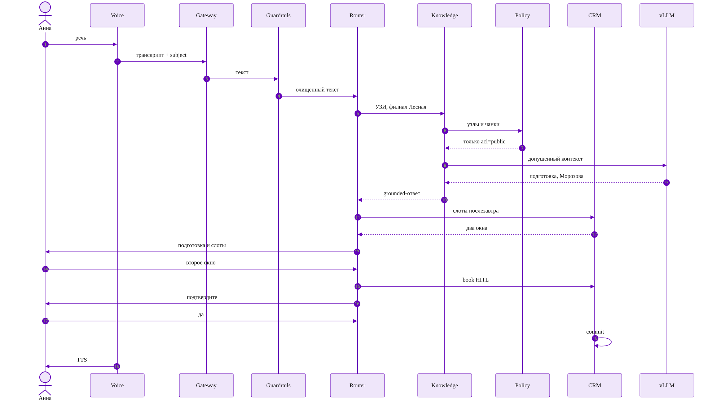
GraphRAG
Это прайс, врачи, филиалы и памятки — не карты пациентов. Ребро «обычно кодируют» подсказывает регистратуре код из бланка; вывода о болезни из него не делается.
PROVIDES: кто ведёт приём по услуге
REQUIRES: как готовиться
AVAILABLE_AT и WORKS_AT: куда ехать
OFTEN_CODED_AS: подсказка стойке, не диагноз
Учёт
Это не справочник услуг, а учёт: организация, учётная запись, карта пациента, связь представительства, визит и запрос. Справочный граф хранится отдельно.
TENANT: сеть филиалов и одна карта пациента.
USER — кто вошёл, PATIENT — чья история. У ребёнка учётки нет.
GUARDIAN_LINK связывает представителя с ребёнком, APPOINTMENT — запись в CRM.
SESSION — этот разговор, AUDIT_EVENT — что открыли и где был отказ.
Data Flow
Метка доступа ставится один раз, при загрузке: открытый документ, служебный или карта конкретного пациента. В живом запросе пересекаются граф, индекс и права того, кто спрашивает.
Размещение
Звонок и чат не попадают сразу в базу и на видеокарты. Из сегмента ускорителей в интернет маршрута нет: веса моделей ставятся с внутреннего зеркала.
Телефония и сайт клиники. Публичных портов у внутренних сегментов нет, поэтому эксплуатация — только через VPN: обновление весов и корпуса, доступ к секретам, разбор инцидентов и трассировок.
Буферный сегмент перед периметром: окончание шифрования и шлюз API, дальше проходит только принятый запрос.
Оркестратор ведёт диалог. Граф, индекс, сессии и секреты — внутри. Карточки — в CRM.
Распознавание речи и генерация ответа. Обращаться к нему может только плоскость управления диалогом.
Экономика
Расчёт на типовом объёме двух филиалов: 500 обращений в день, 250 рабочих дней — 125 000 сессий в год. Сверху — что клиника платит, снизу — что получает взамен.
9,25 млн ₽
2× H100 и 1× L40S с платформами, цены — срез Москвы, сентябрь 2026. В расчёт взята середина диапазона.
H100 5,0–8,0 + L40S 0,8–1,5 + платформы 1,2–2,0 = 7,0–11,5 → 9,25
≈ 3,8 млн ₽
Амортизация закупки, электроэнергия круглосуточной работы и 0,3 ставки сопровождения. Лицензий нет: модели открытые.
9,25 ÷ 3 года = 3,08 · 1,45 кВт × 12 ₽ × 8 760 ч = 0,15 · 0,3 × 1,8 = 0,54 → 3,77
≈ 30 ₽
Годовые затраты, делённые на годовой объём. При росте объёма цена сессии падает: постоянные статьи не меняются.
3,77 млн ₽ ÷ 125 000 = 30,2 ₽ (24,7 + 1,2 + 4,3)
≈ 2,7 млн ₽
70% первого ответа ведёт ассистент, 40% из них закрываются без оператора. Чистая экономия ФОТ ≈ 2,2 млн ₽.
500 × 0,70 × 0,40 = 140 обращений · 140 × 4 мин = 9,3 ч ≈ 1,2 ставки · +0,3 за ускорение цикла → 1,5 × 1,8 = 2,7
15×
Штатный пик — 1,7 сессии в минуту при инженерном потолке 30. Рост нагрузки и третий филиал не требуют новой закупки.
100 сессий в пиковый час ÷ 60 = 1,7 · 30 ÷ 1,7 ≈ 17 → принят ориентир 15×
Метрики
Эффект считают раздельно, и смешивать контуры нельзя: у каждого свой источник данных, своя частота и своя реакция на провал.
Каждый рабочий день на потоке обращений. Источники: журнал сессии, решение доступа, CRM и короткая оценка после закрытия цикла. Отвечает на вопрос, работает ли контур на реальных обращениях.
Контур измерений — ручки /v1/chat и /v1/voiceФиксированный набор сценариев: прогоняется перед каждой выкладкой и при смене графа, индекса или правила доступа. Живой трафик не нужен, результат воспроизводим.
Ворота релиза: не прошёл — выкладки нетНе измеряется процентами и не улучшается со временем. Речь, карты и генерация не покидают периметр — это условие эксплуатации, а не целевой показатель.
152-ФЗ, 323-ФЗ ст. 13Метрики · онлайн
Цикл обращения: звонок или чат → ответ либо эскалация → при записи подтверждение → визит. Удовлетворённость спрашивают после закрытия цикла, а не в середине разговора.
Обращение закрыто ассистентом, эскалации не было.
источник: статус сессииСколько минут цикл занимает у оператора после эскалации и в контрольной группе.
источник: журнал смены и АТСОт первого «хочу записаться» до фиксации визита в учётной системе.
источник: метки подтвержденияКороткая оценка пациента: балл и причина. Текст запроса во внешний сервис не уходит.
источник: опрос после визитаКак часто разговор передают человеку.
источник: узел оператораЗапрос «что у меня» закрыт до обращения к модели.
источник: намерение reject_diagnosisЧужая карта не ушла в контекст модели.
источник: журнал решения доступаНе более 8 секунд при нагрузке 10 запросов в секунду.
источник: метрики шлюзаНе более 1 секунды на реплику длиной 5 секунд.
источник: метрики речевого узлаМетрики · офлайн
Прогон на фиксированном наборе — перед выкладкой и при каждой смене графа, индекса или правила доступа. Первые три проверки — ворота релиза: не прошли, выкладки нет.
Пациент 1 читает карту ребёнка, пациент 3 получает отказ.
набор: три роли стенда · ворота релизаЗолотой набор жалоб закрывается до модели: узлы и фрагменты пусты.
набор: симптомы · ворота релизаВизит фиксируется только после явного «да».
набор: слот и подтверждение · ворота релизаRecall@10 и nDCG на подготовке, филиале и коде МКБ. Точнее выдача — выше доля обращений без оператора.
набор: справочные запросы, ADR-0006Один и тот же вердикт доступа на голосе и в чате при одинаковой реплике.
набор: парные прогоны /v1/chat и /v1/voiceК каждой выкладке прикладывается результат: дата, версия корпуса и правил доступа, вердикт по каждому набору.
основание для выкладки и для аудитаМетрики · проверка эффекта
Деление устойчивое: один человек не переходит между группами внутри периода. Жалоба на самочувствие и просьба о диагнозе всегда уходят человеку — в обеих группах.
Контроль — оператор. Испытание — ассистент с эскалацией. Деление по учётной записи или номеру, период 6–8 недель.
Доля обращений без оператора при CSAT не ниже контроля. Рост удовлетворённости не требуется — требуется нехудшение.
Доля отказа в диагнозе, доля отказа в доступе, задержка ответа. Их проверяют раньше продуктового эффекта.
20% трафика, затем 50%, затем 70% первого ответа. На каждом шаге — контрольная точка по метрикам.
Выход чужой карты в контекст модели или нарушение запрета диагноза — испытание останавливают, трафик возвращают на линию в тот же день.
Доля без оператора ниже 25% — эффект в 1,5 ставки не подтверждён. Контур остаётся каналом записи с подтверждением, срок окупаемости сдвигается.
Метрики · горизонт
Три контрольные точки. Доля без оператора считается внутри испытательной группы, не от всего входящего потока.
| Этап | Трафик | Без оператора | CSAT | Линия |
|---|---|---|---|---|
| 3 месяца, A/B | 20% | ≥ 25% | не ниже контроля | фиксация базы |
| 6–8 недель после расширения | 50% | ≥ 35% | не ниже контроля | −0,7 ставки |
| устойчивый режим | 70% первого ответа | ≥ 40% | не ниже контроля | ≈ −1,5 ставки |
| Статья | Счёт | Ориентир |
|---|---|---|
| Закрыто без оператора | 500 × 0,70 × 0,40 = 140 сессий в день | 140 × 4 мин ≈ 1,2 ставки |
| Короче цикл после эскалации | −20% AHT на смешанных обращениях | ≈ 0,3 ставки |
| Итого линия | 1,2 + 0,3 | ≈ 1,5 ставки ≈ 2,7 млн ₽/год |
| Сопровождение контура | 0,3 ставки, уже в TCO | −0,54 млн ₽/год |
| Чистая экономия ФОТ | 2,7 − 0,54 | ≈ 2,2 млн ₽/год |
Результат
Проект доведён до рабочего стенда: архитектура описана, решения обоснованы, правило доступа проверено тестами, экономика посчитана.
C4 уровней L1–L3, сценарий записи, потоки данных, размещение по зонам сети, ER. Управление диалогом отделено от хранилищ, маршрут — машина состояний, а не линейный скрипт.
Периметр, модель доступа, языковая модель, состав GPU, движок генерации, эмбеддинги, хранилища, оркестрация, речевой канал — каждое с отклонённым вариантом и причиной.
Пять оснований и проверка до вызова модели: представитель читает карту ребёнка, другой пациент получает отказ, регистратура видит визит, но не медицинский документ.
Онтология услуг, врачей, филиалов и подготовки, корпус документов с метками доступа, справочник МКБ-10. Ответ формируется только по допущенному контексту.
Контракты /v1/chat, /v1/voice и /v1/audit работают, 17 автотестов проходят: доступ, представительство, обязанности регистратуры, подтверждение записи, оба канала.
9,25 млн ₽ закупки, ≈ 3,8 млн ₽ владения в год, ≈ 30 ₽ за сессию при запасе ёмкости 15×. Облако дешевле и отклонено по закону.
Развитие
Ближайший этап зафиксирован, остальное — направления, приоритет которых определяется после выхода на живую линию.
Единственный принятый шаг: генерация на H100, речь и эмбеддинги на L40S, приёмка по p95 и Recall@10.
Подключение АТС через пограничный контроллер вместо микрофона и транскрипта.
Напоминание о визите и подготовке, перенос по инициативе клиники — тот же оркестратор, обратное направление.
Программы ДМС, страховые реестры и протоколы подготовки как новые узлы графа.
Доменная адаптация на названиях услуг, фамилиях врачей и терминах справочника.
Другая организация — отдельная установка по тому же шаблону, без общей базы.
Итог
On-premise мультиагентный ассистент с GraphRAG: врачебная тайна и требования 152-ФЗ обеспечены размещением контура и проверкой прав до вызова модели.
9
решений ADR с отклонёнными вариантами
C4
L1 · L2 · L3, сценарий, размещение, ER
≈ 30 ₽
сессия в периметре · 125 000 в год
15×
запас к штатному пику двух филиалов
Вопросы?